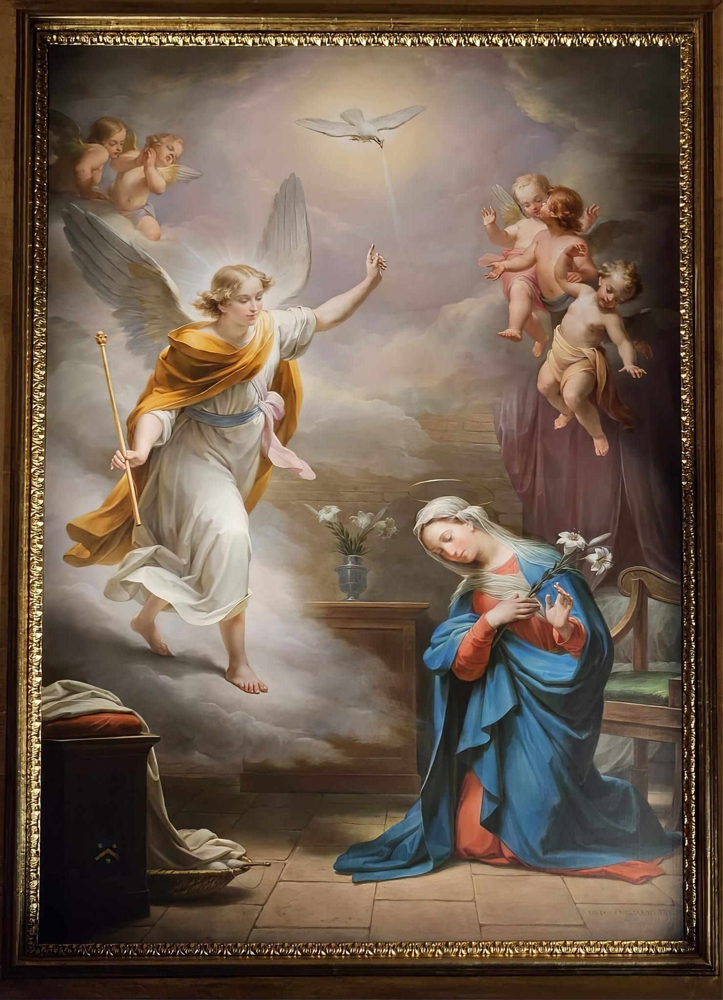

01 · OUR HERITAGE
Our church, our village
The Parish Church of the Annunciation, known locally as Il-Knisja tal-Lunzjata, is a historic landmark of Ħal Tarxien. Tarxien became an independent parish on 29 May 1592 under Bishop Thomas Gargallo, separating from the mother parish of Bir Miftuħ. The parish celebrated its 434th anniversary in 2026. [1] [4]
02 · OUR HERITAGE
When was the church built?
The present church belongs to the early seventeenth century. In 1610, permission was requested for a larger church in the village square. The site contained chapels dedicated to St Paul, St Luke and St Nicholas. [1] [5]
A parish-published study places construction between 1610 and 1627 and refers to a pastoral visit describing the church in 1627. Other historical accounts give 1636 as the date by which the building was fully complete. The safest description is that the church is approximately four centuries old, with later additions and alterations. [2] [4] [5]
03 · OUR HERITAGE
A building that grew with the community
Enlargement during the eighteenth century transformed the earlier building. Work affected the choir, transepts, dome, aisles and façade. The church was consecrated in 1782. Its appearance today reflects several periods of construction rather than one unaltered original design. [1] [4]

04 · OUR HERITAGE
Art and devotion
The story of Gagliardi’s Annunciation
The main Annunciation painting was created by Pietro Gagliardi in 1874. It replaced an earlier painting of the same subject by Alessio Erardi. Mary receives the message from Archangel Gabriel, with the Holy Spirit represented as a dove. [1]
Gabriel approaches Mary as the heavenly messenger, carrying a sceptre and pointing towards the dove of the Holy Spirit. Mary kneels with her head bowed, holding lilies associated with her virginity. Light breaks through the clouds, while small angelic figures surround the scene. [1]
Bishop Gaetano Pace Forno chose Gagliardi for this commission. The painting’s restoration by PrevArti was reported in May 2024, marking 150 years since its creation. Its return was celebrated as an act of care for a work treasured by the parish. [6]
The statue is a separate work
The wooden titular statue of the Annunciation was made by Alexander, also known as Xandru, Farrugia in 1829. This treasured work is a separate object from the main altar painting. [4]
Gagliardi's painting underwent conservation by PrevArti, reported in May 2024. This shows the continuing care given to the parish's artistic heritage. [6]

05 · OUR HERITAGE
Architecture and heritage
The church is described as an example of early Baroque architecture. Its twin bell towers and later architectural changes form part of its distinctive character. A heritage account records its scheduling as a Grade 1 monument on 26 March 1996. [1] [3]